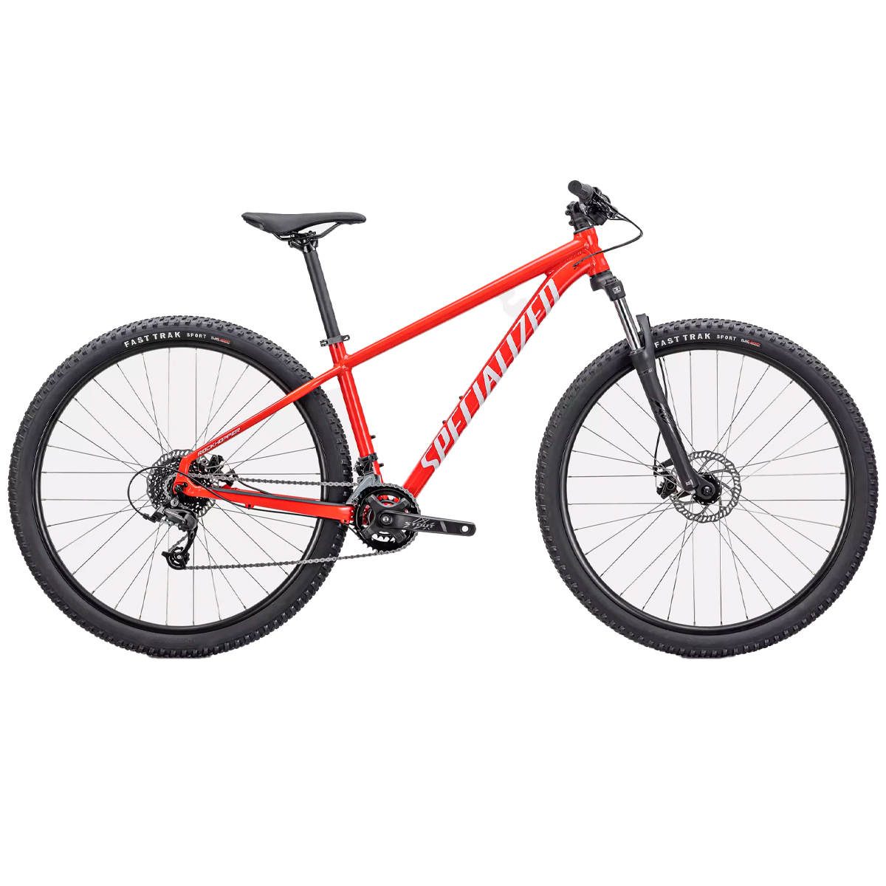

Rockhopper 29
Leve e resistente, com quadro em alumínio A1 premium e suspensão SR Suntour XCE 29 de até 100 mm.
Especificações Técnicas
- Quadro: A1 premium butted alloy, cabeamento interno, dropper-post compatible.
- Suspensão: SR Suntour XCE 29, 100 mm, coil spring.
- Freios: Radius CX7 mecânico a disco 160 mm (dianteiro e traseiro).
- Transmissão: microSHIFT 2×8 (cassete SunRace 11–34 T, corrente KMC X8).
- Rodas: Specialized double-wall 32 f., pneus Fast Trak 29×2.35 tubeless ready.
- Cockpit: mesa Stout 6° rise, guidão 9° backsweep, manoplas lock-on.
- Acessórios: pedais SBC-54 flat, abraçadeira 34.9 mm.